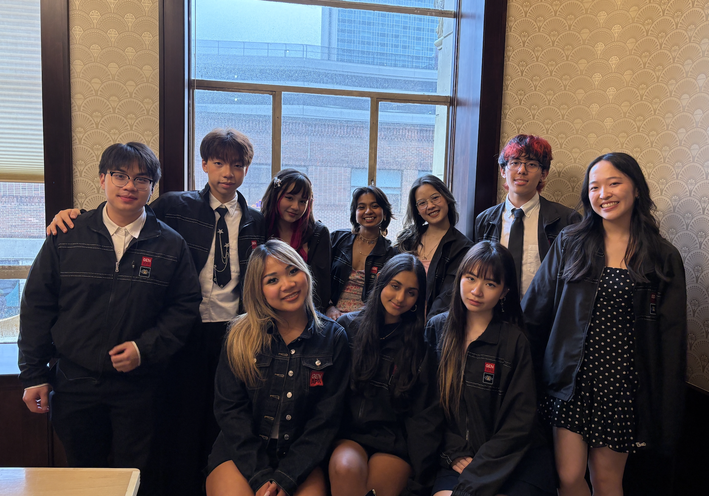
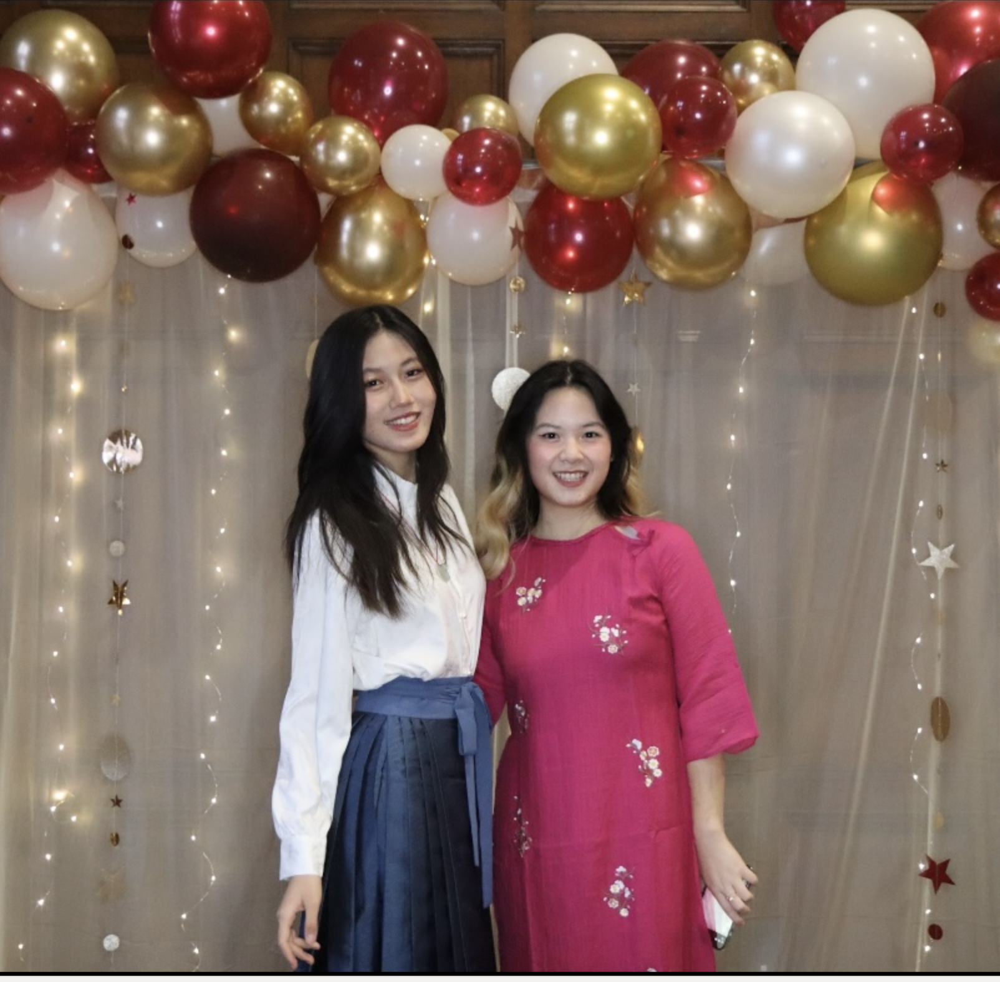
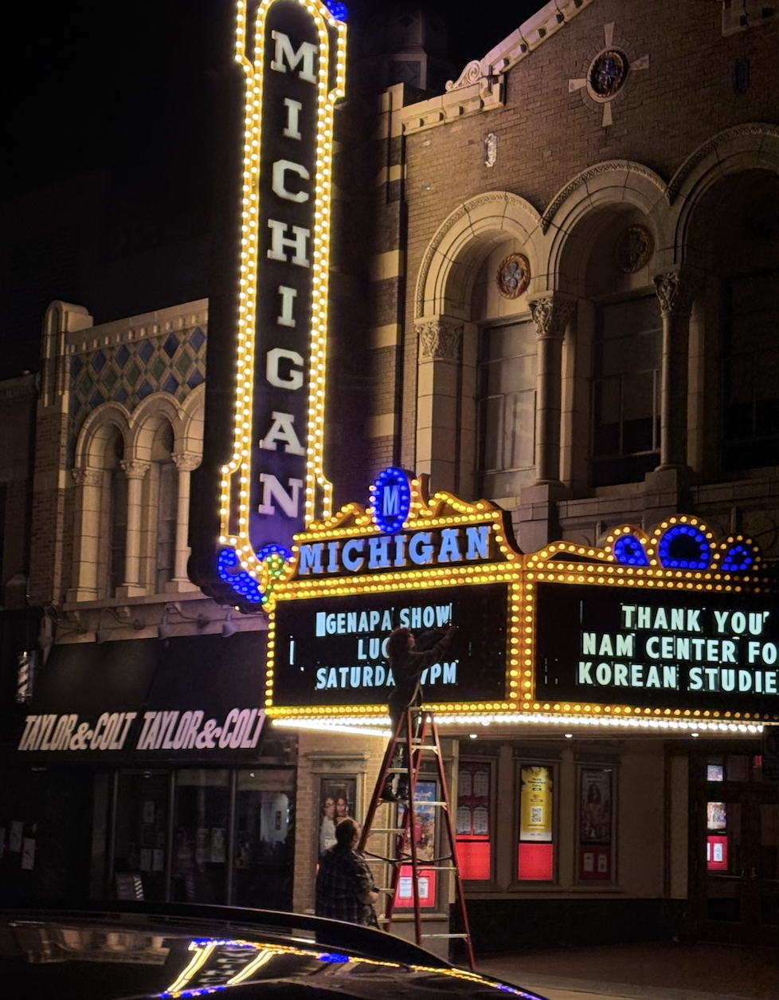
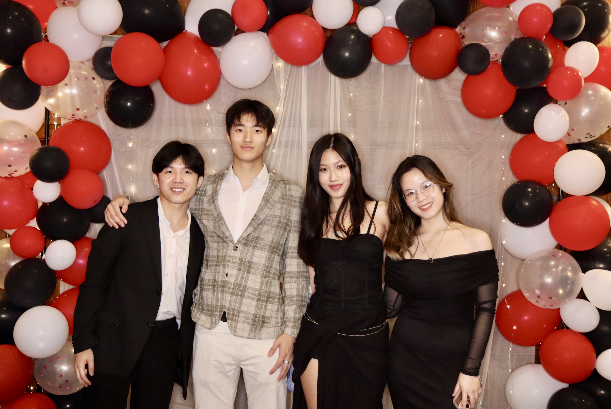

- Brewing matcha...
- Warming your seat...
- Setting the vibe...
- Laying out the menu...
- Your table is ready ✨

Hi, I'm
Victoria Nguyen
Software Engineer & Product Thinker
CS + Entrepreneurship @ University of Michigan. I build tech that doesn’t just work—it feels right. From design to technology, I focus on making systems more human, not just more powerful.





Serving: unlimited
Hover a project to see relevant skills.✨
Featured Work
Click a project to explore the full case study 🍽️
Hopper
Jan 2026 - Apr 2026Study Space discovery. Observational research. Defined product features and design. Metric tracking.
BetBuddies
Sep 2025 - Apr 2026Social accountability platform. Interviews. Combines financial stakes with peer pressure to sustain habits.
SynthLab
Dec 2025 - Feb 2026Privacy-preserving synthetic data for pediatric healthcare. Multi-method generation, statistical validation, fairness testing.
betterSchedule
Sep 2025-Dec 2025Academic scheduling platform redesign from user interviews. Adaptive time-blocking, syllabus sync, smart prioritization.
Heartline Care Companion
Nov 2025 - Dec 2025Wellness mobile app designed around hospital care routines. Gentle reminders, mood check-ins, adaptive UI.
Smart Record App
Nov 2025 - Dec 2025Clinical documentation tool for care team onboarding. Walks through vitals flows and patient decision points.
My Story
Engineering, design, and community care 🗺️
Professional Journey
Gametime United
Full-Stack Software Intern
Michigan Medicine — Department of Computatonal Biology
Research Assistant
- Defined product requirements for a conversational AI interface enabling scientists to query DNA binding predictions
- Architected a FastAPI middleware layer connecting React interfaces with transformer-based genomic models
- Partnered with PhD researchers to convert ML outputs into interpretable product features
- Drove iterative feature development through structured researcher feedback cycles
Tools: Python · FastAPI · React
Michigan Medicine - Department of Pediatrics
Research Assistant
- Built Python data pipelines to clean and standardize large behavioral datasets
- Eliminated data loss and recovered 15+ hours of manual work per week.
- Achieved 90%+ inter-rater reliability in Observer XT behavioral coding
- Analyzed 60+ pediatric feeding interaction recordings to extract structured behavioral metrics
Tools: Python · Pandas · NumPy · ObserverXT · Data Analysis
Michigan Medicine University Hospital
Nursing Assistant II
- Monitored vitals and managed 30+ central lines/drains per shift, providing insight into EMR workflows and clinical data requirements
- Coordinated care documentation across departments using EMR/EPIC systems
- Demonstrated an ability to handle complex, high-stakes information similar to managing code and system data.
- Collaborated with interdisciplinary teams in high-acuity environments, strengthening systems thinking and communication
Tools: Epic EMR · Clinical Documentation Systems · Patient Services · Critical Care
Eastern Michigan University - UROP Program
Research Assistant
- Collected survey data and performed analysis with Excel
- Contributed to writing over 2 research summaries and articles on community health and data representation
- Created and translated over 10 community event flyers using Canva and collaborated with CMS Navigator initiatives
- Presented a project on Firearm Ownership at the U-M 2025 Spring Symposium
Tools: Epic EMR · Clinical Documentation Systems · Patient Services · Critical Care
Trinity Health
Medical Assistant
- Streamlined workflow and productivity by 30% and reduced average patient waiting time by 15%
- Assisted clinicians with lab work, recording vitals, and procedures
- Contributing to improved patient care through accurate documentation and reliable data handling
Tools: Epic EMR · Clinical Documentation Systems · Patient Services · Laboratory
Community & Leadership
Production Chair @ GenAPA
Directing culturally focused content and promo videos for UM's annual showcase.
Advisory Board @ UM Depression Center
Advising on wellness programming and peer engagement platforms.
Small Group Leader @ AsAmHSC
Mentoring high school students on identity, mental health, and college readiness.